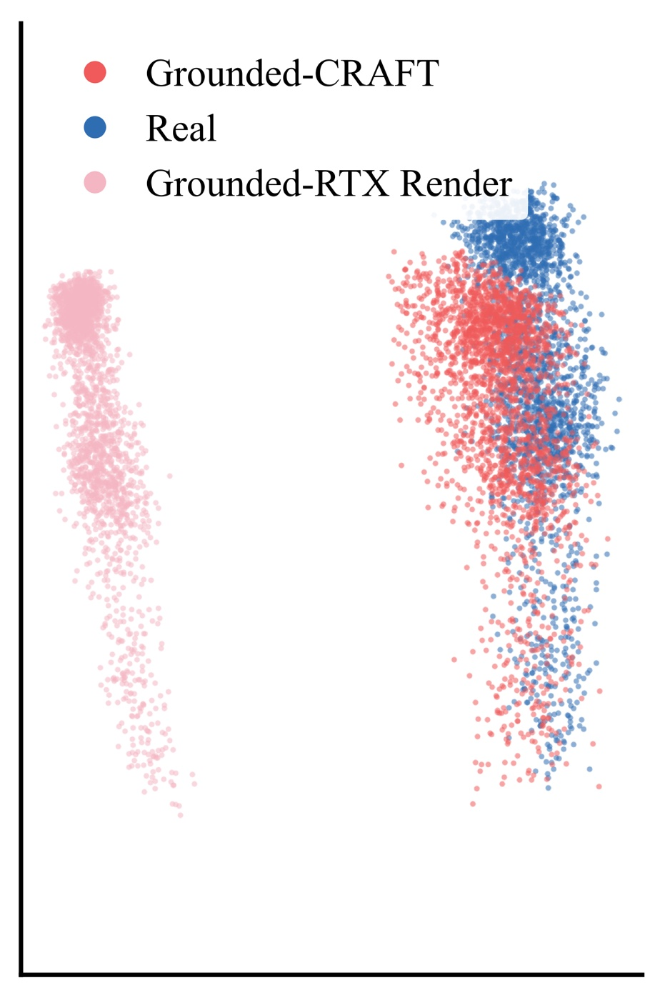

Abstract
Simulation can expand scarce real demonstrations for co-training, yet how world fidelity and similarity to human behavior affect policy performance remains unclear. We distinguish world grounding, which aligns simulation with the real system, and behavior grounding, which aligns simulated trajectories with human motion. We build a real2sim2real pipeline that varies these axes independently to generate data for co-training. On a dynamic dexterous pick-and-sort task, fully grounded co-training raises success from 52% to 86%; averaged across configurations, world grounding improves success by 18 percentage points and behavior grounding by 10. Deployed policies behave like a mixture of real-derived and simulation-derived policies, imitating real demonstrations in covered states and relying on simulated behavior elsewhere, which we examine through latent-space analysis. Together, these results suggest complementary roles: world grounding lets policies use simulated experience beyond real-data coverage, while behavior grounding matters mainly when world grounding is imperfect. Grounded simulation remains beneficial when co-training foundation models.
Video
Simulated data along two grounding axes
We generate about 1,500 simulated trajectories for each of four configurations, setting each grounding axis independently. World grounding aligns the simulator with the real system through camera calibration, scene registration and robot system identification. Behavior grounding adapts the human demonstrations to new object poses and belt speeds with MimicGen; ungrounded behavior is synthesized by grasp proposals and a motion planner.
ungrounded Human-like behavior
grounded Grounded world
All 3 camera views
All 3 camera views
All 3 camera views
All 3 camera views
Head-camera view at 1× speed, one example trajectory per dataset. All four datasets use the same renderer (Isaac Sim RTX); world grounding changes calibration and dynamics (camera intrinsics and blur, scene and robot poses, controller response), not the rendering style. Differences in world grounding are therefore hard to see in these clips, while differences in behavior show in the motion.
Grounded co-training raises success from 52% to 86%
Each co-trained policy uses the same 100 real demonstrations plus about 1,500 simulated trajectories, differing only in how the simulated data is grounded. Each policy is evaluated over 50 real-world trials: 24 nominal and 26 under shifts in lighting, belt speed or object that the real demonstrations do not cover. Choose a condition to compare.
Success rate, 500M flow-matching policy trained from scratch
Example rollouts
One real-world rollout per policy and condition, seen from the head camera at 1× speed. Each clip shows the policy’s typical outcome: a success where it succeeded in at least half of its trials, a failure otherwise. Choose a condition above to switch clips; “All trials” shows a random condition for each policy.
Grounded simulation still helps foundation models
Post-training pre-trained models shows the same pattern. Going from 100 to 1,000 real demonstrations helps a lot, so real data is still a bottleneck. With 100 real demonstrations plus fully grounded simulation, our 2B model reaches 90%, at least matching 1,000 real demonstrations.
Success rate, post-trained foundation models
Switching between real-like and sim-like behaviors
Co-trained policies behave like a mixture of real-derived and simulation-derived policies: they imitate the real demonstrations in states those cover, and fall back on simulated behavior elsewhere. Rollouts in our main conditions rarely leave the real data, so to make the switch easier to see we also trained a diagnostic policy with only 10 real demonstrations and 1,500 fully ungrounded simulated trajectories. It grasps with a two-finger pinch and moves like the motion-planned simulation data (left). The latent-space view (right) follows a separate real rollout, showing how a policy’s observations can move from the real region toward the simulated one.
Better world grounding reduces the need for behavior grounding
Behavior grounding helped by a similar amount under both world-grounding configurations, suggesting our calibration-based world grounding was not yet accurate enough. We therefore improved its visual fidelity with CRAFT-inspired video translation. Translated simulated observations overlap the real ones in latent space, while the RTX-rendered observations form a separate cluster. Co-trained with 25 real and 75 simulated trajectories, policies using behavior-grounded and behavior-ungrounded data both succeeded in 17 of 24 trials, on par with our policy trained on 100 real trajectories (16/24).

BibTeX
@misc{liu2026getting,
title = {Getting Out and Getting Back: World and Behavior Grounding in Real2Sim2Real Co-Training},
author = {Liu, Samuel and Kim, Youngsun and Matak, Martin and Lee, Gilwoo},
year = {2026},
eprint = {2610.00821},
archivePrefix = {arXiv},
primaryClass = {cs.RO},
url = {https://arxiv.org/abs/2610.00821}
}